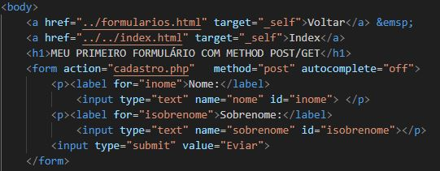

Voltar
Index
MEU PRIMEIRO FORMULÁRIO COM METHOD POST/GET
Esse botão acaba em erro porque não há o php para receber os envios
Nota-se na url que o conteúdo enviado não aparece. Se fosse log e pass, isso seria um problema.
Não aparece porque tem o METHOD="POST"
GET aparece na URL, limita-se a 3K Bytes e não envia arquivos (img)
Curiosidade: Google usa GET. É um poquinhozinho mais rápido
